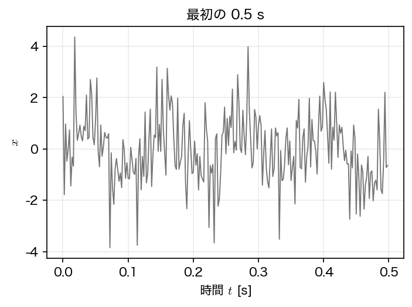

演習問題
解答について
各演習には模範解答を用意してあるが、パスワードで保護されている。授業中に配布されるパスワードを入力すると、その問題の解答が表示される。問題ごとにパスワードは異なる。
AI の利用について
演習のコードは AI（ChatGPT・Claude・Gemini など）に書かせてよい。ただし 生成されたコードは全ての行に目を通し、各ステップが何をしているのかを理解すること。講義の最後に演習の時間が取れた回に、自分のコードを解説してくれた人はプラス評価する。理解せずに提出したコードは自分の力にならない。
環境
Python（numpy, scipy, matplotlib）を使う。環境は第1回の Google Colab または ローカル環境 を参照。解答のコードは、この回の講義ノートのコードを上から実行したノートブックで、続けて実行する。
演習：ウェルチ法で電源ハムを見つけて除く
ある装置の振動を、サンプリング周波数 \(f_s=500\) Hz で \(T=16\) s（\(N=8000\) 点）測った記録 \(x\) がある。測りたい振動 \(s\) は \(8\) Hz と \(120\) Hz の正弦波の和である。記録には、商用電源から入り込んだ \(50\) Hz の 電源ハム（宇都宮を含む東日本の電源周波数は \(50\) Hz）と、標準偏差 \(\sigma=1\) の白色雑音が加わっている。次のコードでデータを作れ。
rng = np.random.default_rng(3)
fs, T = 500.0, 16.0 # サンプリング周波数 [Hz]、記録の長さ [s]
N = int(fs * T)
t = np.arange(N) / fs
sigma = 1.0 # 白色雑音の標準偏差
s = np.sin(2*np.pi*8*t) + 0.5*np.sin(2*np.pi*120*t) # 測りたい振動
hum = 0.3 * np.sin(2*np.pi*50*t) # 電源ハム
x = s + hum + sigma * rng.standard_normal(N) # 雑音を足す

(a) scipy.signal.welch（Hann 窓、nperseg=1024）で PSD を求め、dB（\(10\log_{10}\)）で図示せよ。3 つのピークの周波数を読み、ピークのない帯域で雑音フロアの高さを読め。雑音フロアの理論値 \(\sigma^2/(f_s/2)\) と比べよ。
(b) 生信号 \(x\) → FFT（rfft）→ ノッチフィルタ → irfft → ウェルチ法、の順に処理してハムを除け。ノッチフィルタでは \(50\) Hz 付近の成分を \(0\) にする（幅は (a) の図から決める）。最後に求めた PSD を (a) と重ねて図示し、\(50\) Hz のピークだけが消えたことを確かめよ。
ヒント
- 講義ノートと同じく
f_w, P_w = ss.welch(x, fs=fs, window='hann', nperseg=1024)。dB は講義ノートの関数dB（10 * np.log10(p)）で求める。 - 白色雑音の片側 PSD は周波数によらず一定で、高さは \(\sigma^2/(f_s/2)\) になる（ピリオドグラムとウェルチ法）。
- ウェルチ法の周波数の刻みは \(f_s/1024\approx0.49\) Hz で、ハムのピークの幅はその数倍ある。\(0\) にする幅は、ピークの裾が収まるように取る。
- ノッチフィルタは
H = (np.abs(freq - 50) > 幅).astype(float)で作り、np.fft.irfft(X * H, n=N)で戻す（周波数領域フィルタリング）。
解答（🔒 パスワードを入力すると表示）